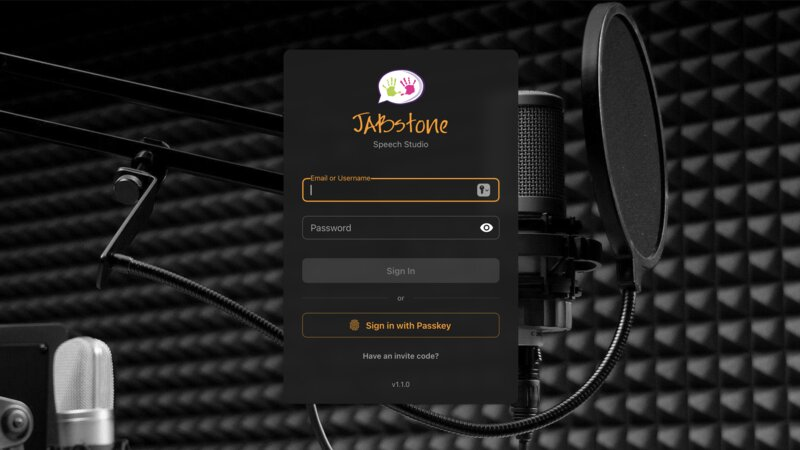
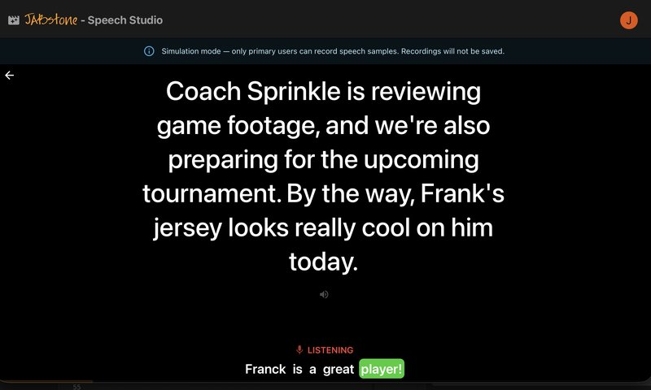
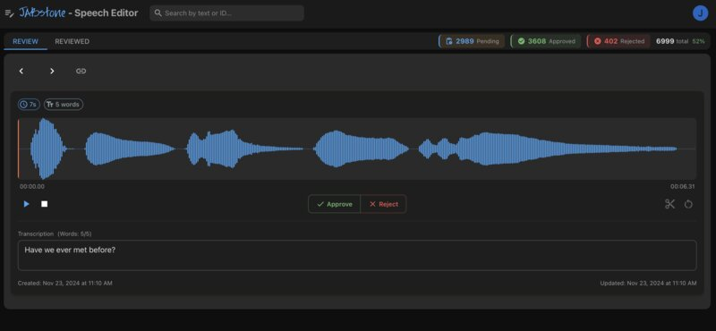
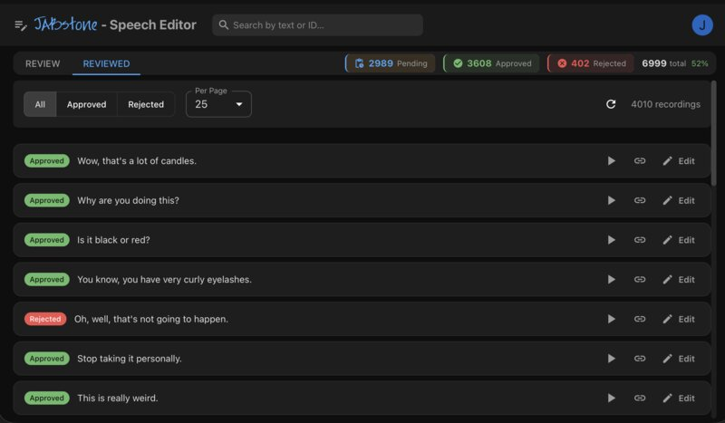

Custom AI Speech Recognition
for Every Voice
The JABstone Speech Platform helps children and adults with speech disabilities communicate using AI models built specifically for them. No two voices are alike — and neither are our models.




How It Works
JABstone provides a complete workflow — from collecting speech samples to deploying a personalized AI model that understands each individual’s unique voice.
Speech Studio
Uses AI to generate custom speech sessions that simulate real-world scenarios defined for each user — conversations at school, orders at a restaurant, interactions with family. This collects highly relevant language tailored to each individual, building focused datasets that lead to better recognition models.
Speech Editor
Provides tools to review, trim, and clean up recordings so every sample that goes into model training is high quality. Better data means a more accurate model.
Custom AI Models
Each model is fine-tuned on an individual’s actual speech patterns — including atypical pronunciation, apraxia, and other speech differences. The result is recognition that improves with every session and runs directly on iPhone and iPad for fast, private, offline use.
Real-Time Communication on iOS
An iOS application that ties everything together is in development. It uses each person’s custom AI model to provide real-time speech recognition — helping users communicate at school, at home, and in the community.
The app runs the model locally on-device for fast, private recognition that works anywhere.
JABtalk — Where It All Started
JABtalk launched in 2012 at a time when there were no free AAC apps available on Android. It went on to be used by hundreds of thousands of people around the world. Today, the AAC landscape has grown tremendously, and advances in AI have opened up new possibilities for supporting people with speech disabilities — which is where the JABstone Speech Platform picks up. While JABtalk is no longer published to the Google Play Store, the APK can still be downloaded and sideloaded onto Android devices.